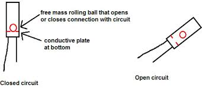
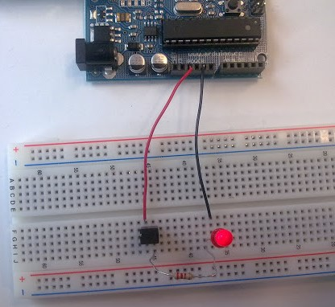
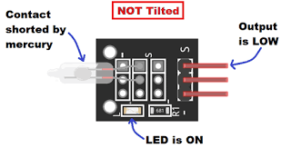
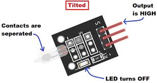
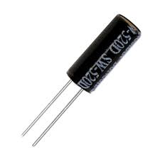
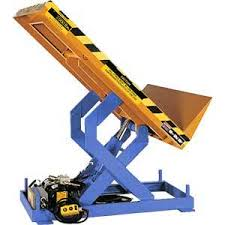

WHAT IS TILT SENSOR??
Overview
Tilt sensors allow you to detect orientation or inclination. They are small, inexpensive, low-power and easy-to-use. If used properly, they will not wear out. Their simplicity makes them popular for toys, gadgets and appliances. Sometimes they are referred to as "mercury switches", "tilt switches" or "rolling ball sensors" for obvious reasons.
They are usually made by a cavity of some sort (cylindrical is popular, although not always) and a conductive free mass inside, such as a blob of mercury or rolling ball. One end of the cavity has two conductive elements (poles). When the sensor is oriented so that that end is downwards, the mass rolls onto the poles and shorts them, acting as a switch throw.
Tilt switches used to be made exclusively of mercury, but are rarer now since they are recognized as being extremely toxic. The benefits of mercury is that the blob is dense enough that it doesn’t bounce and so the switch isn’t susceptible to vibrations. On the other hand, ball-type sensors are easy to make, wont shatter, and pose no risk of pollution.
What is a Tilt Sensor?
Tilt Sensor (Ball Switch) are switches that can detect basic motion/orientation. The metal tube has a little metal ball that rolls around in it, when its tilted upright, the ball rolls onto the contacts sticking out of end and shorts them together.
What is a tilt sensor used for?
 Tilt switches transfer a change-of-state to another device. These devices receive a signal from the tilt sensor for changes in motion or orientation and turn on or off. Other materials that can activate a tilt switch include metal balls and electric current.
Tilt switches transfer a change-of-state to another device. These devices receive a signal from the tilt sensor for changes in motion or orientation and turn on or off. Other materials that can activate a tilt switch include metal balls and electric current.
some of the common examples of practical applications of tilt sensors:
• As a device that indicates the rolling or tilting movement of boats, aircraft, and automobiles. Tilt sensors act as a safety device in these applications.
How does a tilt sensor work?

The essential components of a tilt sensor are a rolling ball and a conductive plate below it. When electricity is applied to the device, the ball falls and connects electronically with the conductive plate.
How do you test a tilt sensor?

Testing your sensor is simple. Put your multimeter into continuity-test mode and touch the probes to the two leads. Then tilt to determine the angle at which the switch opens and closes. When pointing down, the switch is Open Loop (no continuity). When pointing up, the switch is closed (low resistance / continuous).
Connecting to a Tilt Sensor?


Tilt switches are pretty hardy, you can easily solder to them, clip the leads, plug them into breadboards, use alligator clips, etc. The only care you should take is to avoid bending the leads too much as they may break off.
Simple Tilt-Activated LED-
This is the most basic way of connecting to a tilt switch, but can be handy while one is learning about them. Simply connect it in series with an LED, resistor and battery. Tilt to turn on and off.
Reading Switch State with a Microcontroller-Note that the layout above shows a 10K pull up resistor but for the code I use the 'built-in' pull up resistor that you can turn on by setting an input pin to HIGH output (it’s quite neat!) If you use the internal pull-up you can skip the external one.
WHAT ARE THE BENEFITS?

•Tilt sensors are easy to operate and compact
• Tilt sensors are low cost and do not use much power
• Does not require complex circuitry to read data
• Has high measurement accuracy and resolution
These key benefits are the primary reasons why tilt sensors remain to be one of the reasons for the device’s popularity and widespread application in many industries.
TILT SENSORS AND VEHICLES USED IN CONSTRUCTION-

Industrial machines such as those used in construction, mining, and other similar fields also use tilt sensors for enhanced safety. An illustrative example is to prevent heavy equipment from going off-course and tipping over. Accidents while operating these machines can happen at any point, which is why tilt sensors play a vital role in preventing these mishaps.
• Tilt sensors help monitor the chassis tilt angle. The chassis angle of a machine ensures that it is within the safe angle to operate. The tilt sensor warns the machine if the angle is unsafe by limiting specific actions the operator can take such as preventing boom movement or platform height increase.
• Tilt sensors monitor the platform angle. Calculating the platform angle will help the operator determine the maximum load the vehicle can operate under without compromising safety.
Tilt sensors used in construction is only one example of how important these devices are for many industrial applications. Apart from being a safety feature, tilt sensors are also essential in controlling specific processes which are part of a range of functions included in system automation.
• Consumer electronic products like handheld computers, smartphones, and gaming consoles use tilt sensors in a variety of ways. In smartphones, for example, a tilt sensor detects the angular position of the device for the auto-rotate function to work.
• Land-based communication satellites need to be positioned at a certain angle with reference to a satellite in space for signal connection. This is done with the help of a tilt sensor.
• Tilt sensors are also crucial in practical engineering functions such as measuring the height of a building or a tree.
Apart from these applications, tilt sensors are also essential in industrial machine automation.